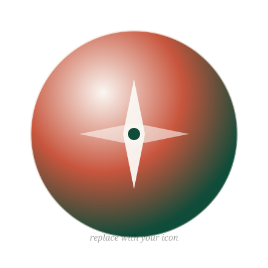

About
A travel app that whispers, not shouts.
We built Guidera for the kind of traveler who'd rather get pleasantly lost than follow a flag on a stick.

The problem with most travel apps
Most travel apps treat cities like checklists. They funnel you to the same ten viewpoints, push notifications at you while you're trying to look at a fresco, and gamify a trip you took specifically to slow down.
A different approach
Guidera does the opposite. It assumes you're curious, capable, and don't need to be told what to do next. Tap a place. Hear its story. Ask a follow-up. Walk on. That's the whole app.
No badges. No streaks. No "discover" tabs trying to extend session time. Just a quietly beautiful tool that gets out of your way.
Built by one person
Guidera is made by Mehmet Selim Çetin — a solo developer who got tired of squinting at Wikipedia in the rain. Every detail, from the typeface to the audio player, is hand-shaped to feel like a quiet companion rather than a loud product.
If you have feedback, an idea, or just want to say hi, write to mehmetselim692@icloud.com. Real human, real reply.